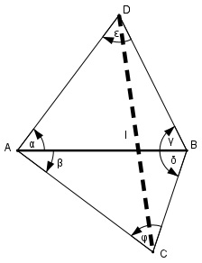

>Aufgabe 228 Um die Länge l eines Tunnels zu bestimmen, steckt man auf dem Bergrücken eine waagerechte Standlinie AB von 485,7 m Länge ab undmisst die Horizontalwinkel α = 59,4°, β = 41,5°, γ = 67,3° und δ = 70,7°. Wie groß ist l?

Im Dreieck ABD: ε = 180° - α – γ = 180° - 59,4° - 67,3° = 53,3° Fall SWW: Sinussatz: 485,7 m AD --------- = --------- |*sin γ sin ε sin γ 485,7 m * sin γ 485,7 m * sin 67,3° AD = ------------------ = -------------------- = sin ε sin 53,3° 485,7 m * 0,9225 AD = ------------------- = 558,8 m 0,8018 Im Dreieck ACB: φ = 180° - β - δ = 180° - 41,5° - 70,7° = 67,8° Fall SWW: Sinussatz: 485,7 m AC ----------- = -------- |*sin δ sin φ sin δ 485,7 m * sin δ 485,7 m * sin 70,7° AC = ----------------- = -------------------- = sin φ sin 67,8° 485,7 m * 0,9438 AC = ------------------- = 495,1 m 0,9259 Im Dreieck ACD: Fall SWS: Cosinussatz: CD2 = AD2 + AC2 - 2 * AD * AC * cos (α + β) CD2 = 558,82 m2 + 495,12 m2 - - 2 * 558,8 m * 495,1 m * cos (59,4° + 41,5°) CD2 = 312 257,4 m2 + 245 124 m2 + + 553 323,8 m2 * cos 100,9° CD2 = 557 381,4 m2 - 553 323,8 m * (-0,1891) CD2 = 662 014,9 m2 |γ CD = 813,6 m = l